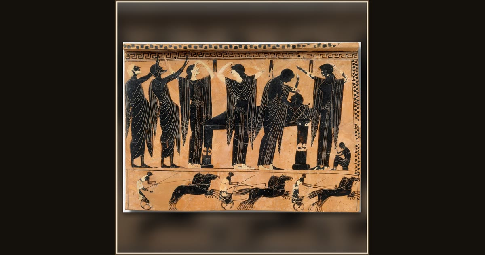

Terracotta funerary plaque
Greek, Attic, Archaic · ca. 520–510 BCE · met
Mourners raise their arms around a body laid out on a bier, with chariots in the lower register; the Athenian limits the time before burial (959a). Explore its place in Plato's Dialogues, Laws · Book XII, section 90.